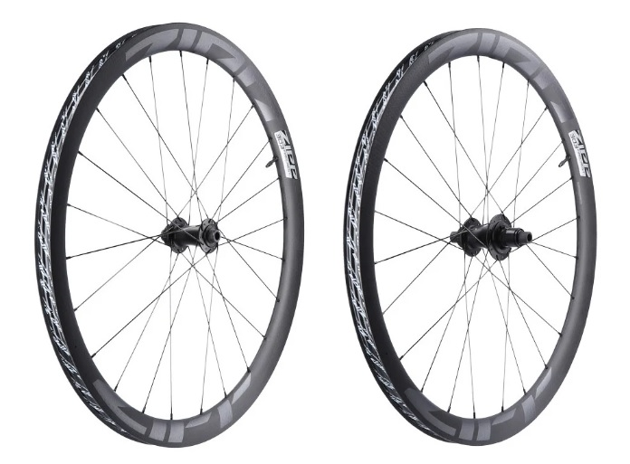

Road Kerékpár
A road kerékpárok a leggyorsabb kerékpárok, amelyeket aszfaltos utakon való közlekedésre terveztek. Ezek a kerékpárok könnyűek és aerodinamikusak, így ideálisak hosszú távú tekerésekhez és versenyzéshez.
Fő jellemzők
Váz:
Könnyű és merev anyagokból készült, mint például karbon vagy alumínium.Váltás
Az országúti kerékpárokon nagy áttételtartományú, finoman hangolt váltórendszer található, amely lehetővé teszi a hatékony pedálozást sík terepen és emelkedőkön egyaránt. A legtöbb országúti kerékpáron: 2 első lánctányér van (például 50/34 vagy 52/36 fogszám), 10–12 fokozatú hátsó sor (például 11–28 vagy 11–32 fog), Mechanikus vagy elektronikus váltórendszert használnak (pl. Shimano 105, Ultegra, SRAM Rival, Campagnolo Chorus), Az elektronikus váltók (pl. Shimano Di2, SRAM eTap) pontosabbak és kevesebb karbantartást igényelnek, de drágábbak. A váltókarok integrálva vannak a fékkarokkal, így kéz elvétel nélkül lehet váltani, ami praktikus verseny vagy gyors haladás közben.
Kerekek:
Vékonyabb gumik, amelyek csökkentik a gördülési ellenállást.Fék:
Általában hagyományos fékek vagy tárcsafékek.Kormány:
Aero és integrált kormányok, amelyek könnyűek és merevek.
- Esztétika: Letisztult, modern megjelenést biztosítanak, mivel nincsenek látható csavarok vagy illesztések.
- Aerodinamika: Csökkentik a légellenállást, ami különösen fontos a versenyzők számára.
- Rejtett kábelezés: A fék- és váltókábelek teljesen a kormányon és a vázon belül futnak, ami nemcsak esztétikus, hanem praktikus is.
- Merevség: Az integrált kialakítás növeli a merevséget, ami jobb irányíthatóságot és hatékonyabb erőátvitelt eredményez.
Váltás:
Elektromos váltók, amelyek gyorsak és pontosak.- Mechanikus váltás: A hagyományos bowdenes megoldás, ahol kézi erővel mozgatod a váltót (pl. Shimano 105, Ultegra).
- Elektronikus váltás: Gombnyomásra működő váltás vezetékes vagy vezeték nélküli rendszerrel (pl. Shimano Di2, SRAM eTap, Campagnolo EPS).
- Előnyei: pontosabb, gyorsabb váltás, kevesebb karbantartás, automatikus finomhangolás.
- Jobb kéz: hátsó váltás (kazettán nagyobb/kisebb fogaskerékre).
- Bal kéz: első váltás (nagyobb/kisebb lánctányér között).
- Mechanikus rendszereknél: fontos a rendszeres bowdenfeszesség-ellenőrzés és finombeállítás.
- Elektronikus rendszereknél: szoftveres finomhangolás is elérhető okostelefonról vagy számítógépről.
- Alap szint: Shimano Claris, Sora.
- Középkategória: Shimano Tiagra, 105.
- Felsőkategória: Shimano Ultegra, Dura-Ace, SRAM Force, Red, Campagnolo Super Record.
Alumínium – könnyű, merev és elérhető árú. Karbon – nagyon könnyű és rezgéscsillapító tulajdonságokkal bír, de drágább. Acél – rugalmasabb és kényelmesebb hosszú távon, de nehezebb.
Az országúti kerékpárok kerekei könnyűek és aerodinamikus kialakításúak, hogy növeljék a sebességet és a hatékonyságot. Jellemzőik: Kerékméret: Szinte minden országúti kerékpár 700C méretű kerekeket használ (átmérő kb. 622 mm). Gumiszélesség: Régen 23 mm-es volt a standard, de manapság egyre elterjedtebbek a 28–32 mm-es gumik, mert ezek kényelmesebbek és jobb tapadást biztosítanak anélkül, hogy jelentősen csökkentenék a sebességet. Felni anyaga: Alumínium,Carbon és a kihaló félben lévő Acél.A World Tour csapatok több mint 90%-a karbon felniket használ, és tubeless rendszert, ami megbízható és defektállóbb, mint a régi hagyományos módszer

Az országúti kerékpárokon a fékek típusa és teljesítménye kulcsfontosságú a biztonságos és hatékony fékezéshez. A leggyakoribb típusok: V-fékek: Könnyűek és egyszerűen karbantarthatók, de nem olyan erősek, mint a tárcsafékek. Tárcsafékek: Erősebb fékezést biztosítanak, különösen nedves körülmények között, de nehezebbek és drágábbak. Hidraulikus tárcsafékek: A legjobb fékezési teljesítményt nyújtják, de a legdrágábbak is.

Az országúti kerékpárok ikonikus eleme az ívelt (drop bar) kormány, amely lehetővé teszi a többféle kéztartást és az aerodinamikus testhelyzetet. Az utóbbi években a kormányfejlesztések is modern irányt vettek: A modern kormányok lapított felső résszel és enyhén kiszélesített alsó ívvel készülnek, így kényelmesebb hosszú távon a kéztartás, és javul az irányítás is lejtőzésnél. Compact drop:A hagyományos mély ív helyett sok országúti kormány már kompakt ívű, azaz kisebb a drop (függőleges távolság a felső és alsó fogás között), így könnyebb átfogni és használni az alsó részt. Aero kormány: Ezek lapított, szárnyszerű felső résszel készülnek, hogy csökkentsék a légellenállást. Versenyzésre és teljesítmény-orientált bringásoknak ajánlott.
Integrált kormány-szár rendszerek
Az integrált kormány-szár rendszerek egyre népszerűbbek a csúcskategóriás országúti kerékpárokon. Ezek a rendszerek a kormányt és a stucnit egyetlen egységként kezelik, ami számos előnnyel jár:
Az ilyen rendszerek hátránya, hogy kevésbé állíthatók és drágábbak, mint a hagyományos kormány-szár kombinációk. Azonban a teljesítményorientált kerékpárosok számára megérheti a befektetést.
Egyes csúcskategóriás modelleken a kormány és a stucni (szár) egy egységet alkot, teljesen rejtett bowdenezéssel. Ez nemcsak esztétikusabb, de aerodinamikusabb is.Rejtett kábelezéssel vannak a legújabb trendek szerint a fék- és váltókábelek (vagy vezetékek) teljesen a kormányon és a vázon belül futnak, ami letisztult megjelenést és kevesebb légellenállást eredményez.

Az országúti kerékpárok váltórendszere a hatékony, gyors haladást támogatja sík úton és emelkedőkön egyaránt. A váltás technikája és felépítése az évek során sokat fejlődött.
Áttételek
A legtöbb modern országúti kerékpár elöl 2 lánctányérral (dupla hajtóművel) és hátul 10–12 sebességes kazettával rendelkezik.
A klasszikus országúti áttétel például 50/34 fogú lánctányér (kompakt hajtómű) elöl és 11–28 vagy 11–32 fogú sor hátul.
Léteznek már 1x (egylánctányéros) rendszerek is (főleg gravel és endurance kategóriában), de klasszikus országúti bringán a 2x rendszer a legelterjedtebb.
Váltórendszer típusok
Váltókarok (shifterek)
A váltás be van építve a fékkarokba.
Egy kis mozdulat elegendő a váltáshoz, így a kezed mindig a kormányon maradhat. Modern váltókarok ergonomikus kialakításúak, hogy kényelmes legyen a hosszabb utak során is.